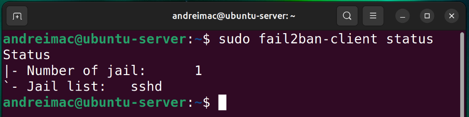
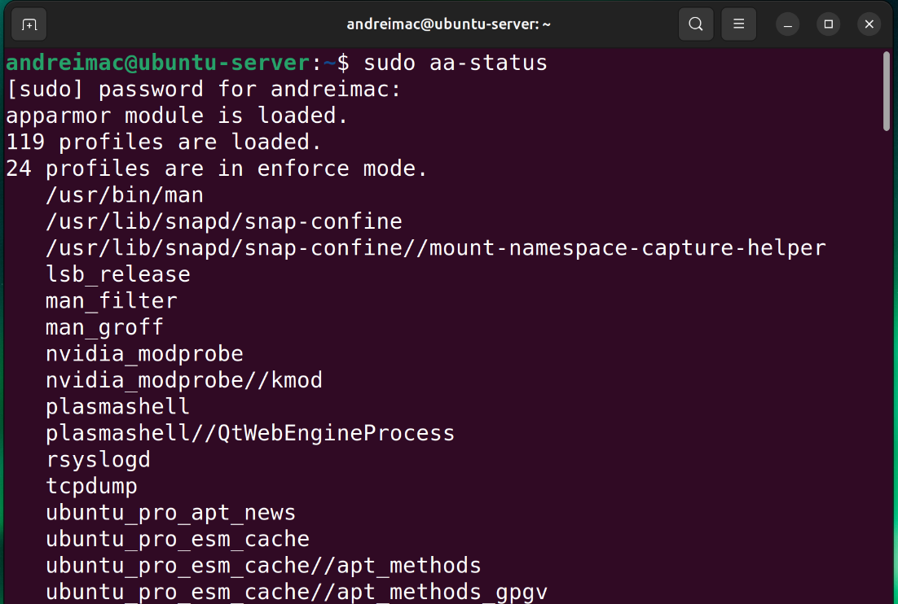
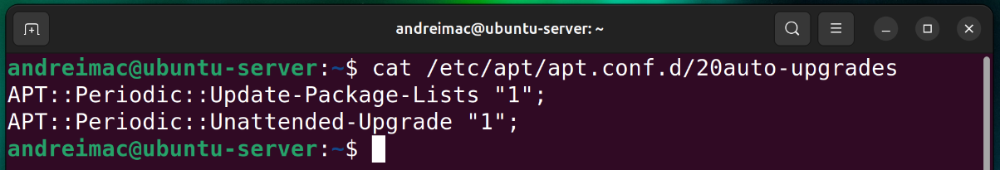
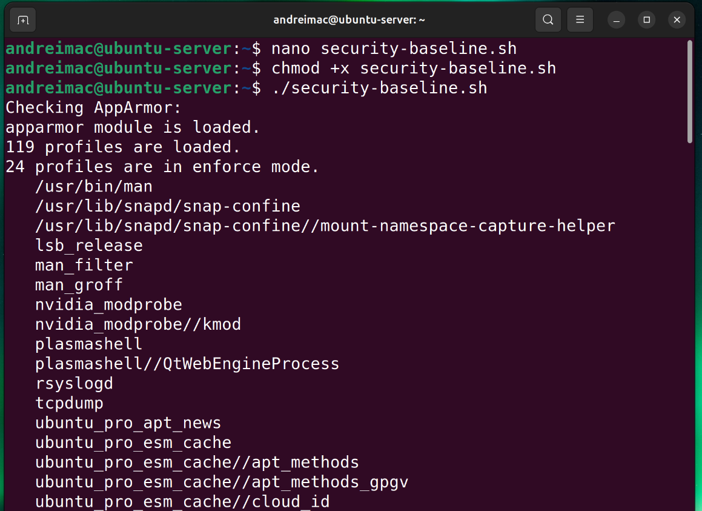
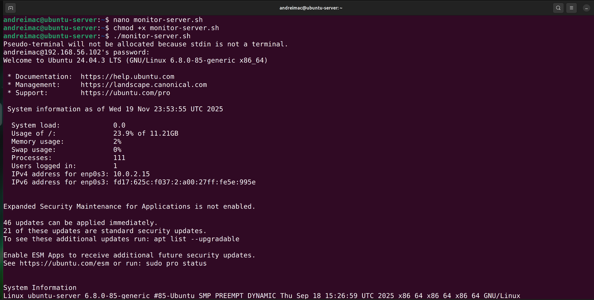
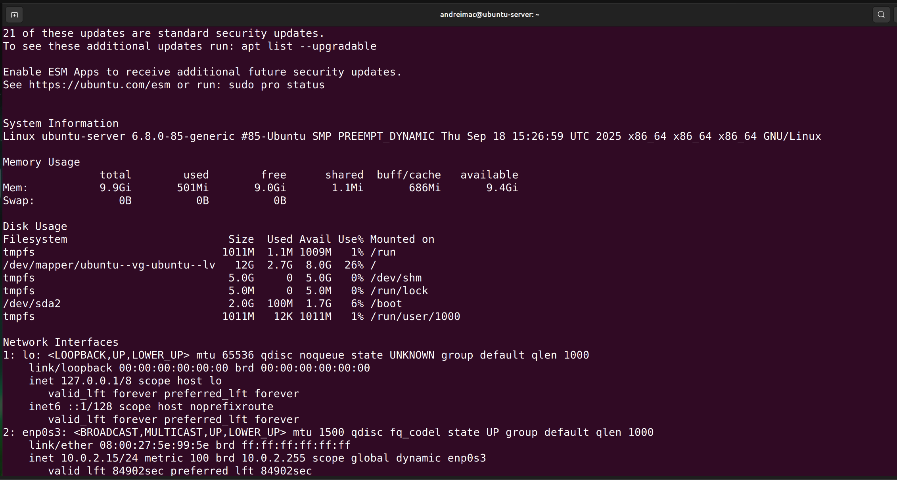

Strengthening server security and enabling remote monitoring capabilities.
Week 5 focused on implementing the advanced security and monitoring features needed to strengthen the Ubuntu Server configured earlier in the project. The aim was to protect the system against common threats while enabling reliable remote administration. All work was performed over SSH from the workstation, maintaining a headless-server management workflow.
The objective for this week was to enhance the server’s security posture by enabling mandatory access control (AppArmor), configuring automatic security updates, deploying fail2ban to prevent unauthorized SSH access, and validating protections using a custom baseline script. Additionally, a remote monitoring script was created to collect system performance metrics securely over SSH.
AppArmor was checked, verified, and enforced for critical services.
sudo systemctl status apparmor sudo aa-status sudo aa-enforce /etc/apparmor.d/usr.sbin.sshd
Result: AppArmor is active and enforcing security policies.

sudo apt install unattended-upgrades -y sudo dpkg-reconfigure --priority=low unattended-upgrades cat /etc/apt/apt.conf.d/20auto-upgrades
Result: The server now installs security updates automatically.

fail2ban was installed to block SSH brute-force attempts.
sudo apt install fail2ban -y sudo systemctl enable fail2ban sudo systemctl start fail2ban sudo fail2ban-client status

A script verifying AppArmor, fail2ban, firewall, and SSH settings was executed remotely.
chmod +x security-baseline.sh ssh adminuser@192.168.56.10 'bash -s' < security-baseline.sh
Result: All checks passed successfully.

#!/bin/bash ssh adminuser@192.168.56.10 << 'EOF' uname -a free -h df -h ip addr EOF
Result: Monitoring output retrieved successfully.


This week strengthened server security by implementing AppArmor, automatic upgrades, and fail2ban. The monitoring script provided remote visibility, supporting secure headless administration.